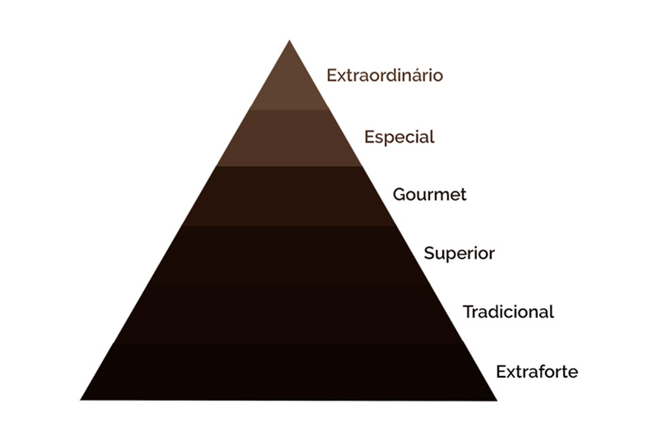

Talvez você já deve ter ouvido falar expressões como especial, extraforte, tradicional ou gourmet para se referir à qualidade dos cafés. No entanto, se tudo isso ainda é uma novidade para você, queremos te mostrar as principais diferenças dessas bebidas e como são classificadas de forma prática. Agora, se a sua intensão é encontrar um café extraordinário, continue lendo!
Em termos de pontuação dos cafés, poderíamos identificar os tipos de café da seguinte forma: Café Extraordinário: acima de 90 pontos; Café Especial: acima de 80 pontos; Café Gourmet: entre 75 a 80 pontos; Café Superior/Premium: entre 70 a 75 pontos; Café Tradicional: entre 65 a 70 pontos; Café Extraforte: abaixo de 65 pontos.